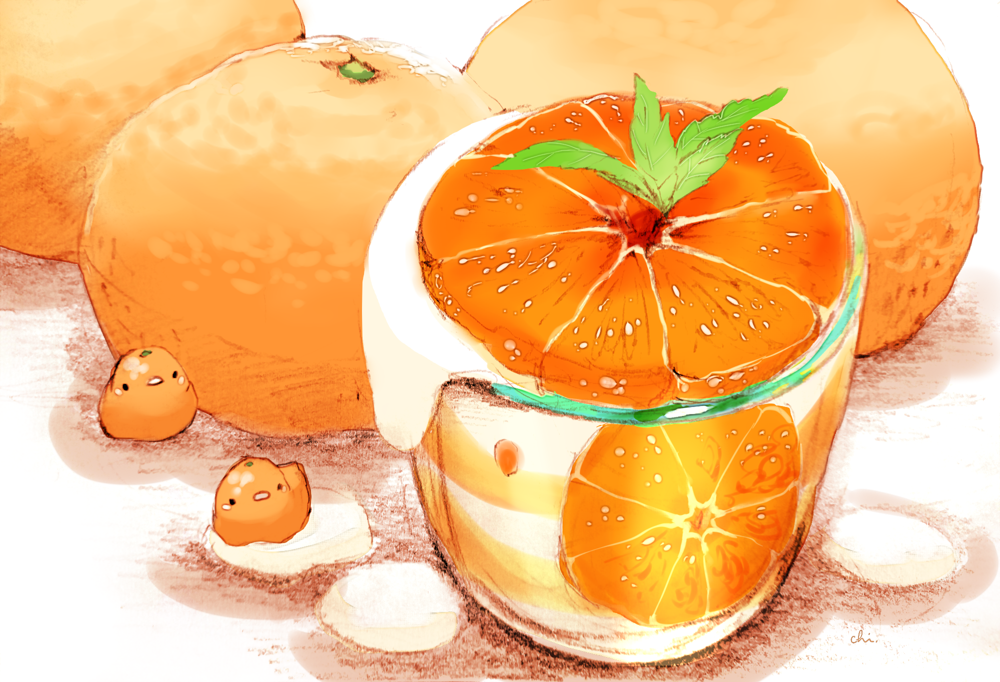
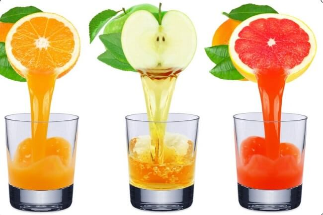
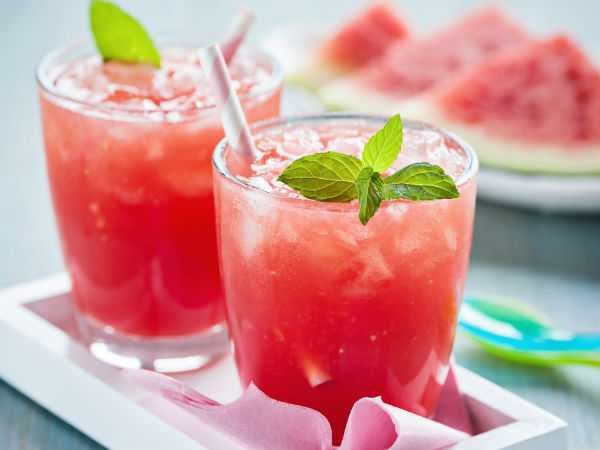
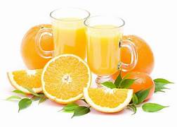
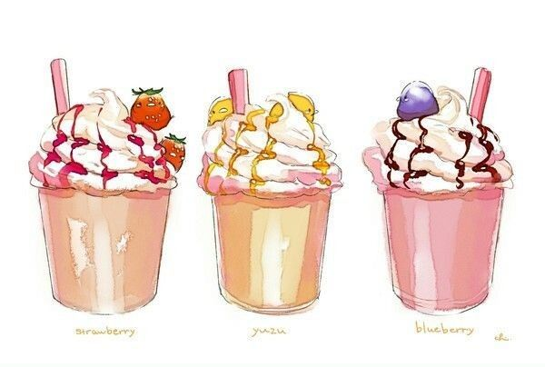

Coffe
Coffee is a popular beverage around the world, made from roasted coffee beans and hot water. It has a characteristic aroma and diverse flavor, from bitter to sweet, depending on the type of seed and preparation. Coffee is often enjoyed to create more energy and wake up in the morning or to show relaxation throughout the day.

orange juice
Orange juice is a delicious and nutritious drink made from fresh oranges. This is a delicious and healthy option. Sweet, sour, and full of vitamin C, orange juice is the perfect combination of deliciousness and nutrition. For a refreshing and healthy experience, orange juice is the perfect choice.

Juice
Fresh juice is a natural, delicious and nutritious beverage made from fruits and/or vegetables. This is a refreshing and nutritious drink selection, often made on site to ensure freshness and quality. With a wide variety of flavors and ingredients, fresh juices are a great way to provide your body with vitamins and minerals while enjoying natural flavors.

Strawberry juice
Strawberry juice is a fresh and delicious drink, made from fresh strawberries. This is a refreshing choice with a sweet flavor and beautiful color. Strawberry juice is often made on site to ensure the freshness and natural sweetness of the strawberry is preserved. This is a great way to enjoy the natural flavors and provide your body with vitamin C and antioxidants.

Passion fruit juice
Passion fruit juice is a cool and fresh drink, made from passion fruit and its juice. This is a unique combination of the sour taste of lemon and the characteristic aroma of vine. Passion fruit juice is often made on-site to maintain its fresh taste and nutrition. This is a refreshing drink option that's rich in vitamin C and can be enjoyed on a hot summer day or anytime you want a nutritious, dessert drink.

cream smoothies
Ice cream smoothie is a delicious and fancy drink, usually made by combining fresh fruits and fresh cream. This is a sweet, rich option and is often beautifully decorated with a special layer of cream on top. Ice cream smoothies can be customized with a variety of fruits, from bananas and strawberries to mango and pineapple, creating a wide variety of flavors. This is a perfect drink to enjoy as a delicious breakfast, an after-dinner dessert option, or a refreshing way to satisfy a sweet tooth on a hot day.